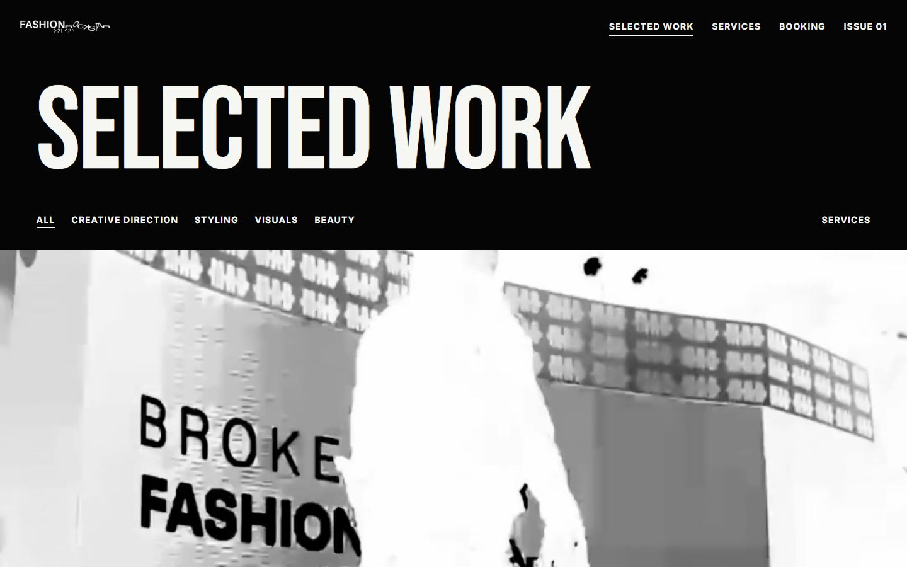
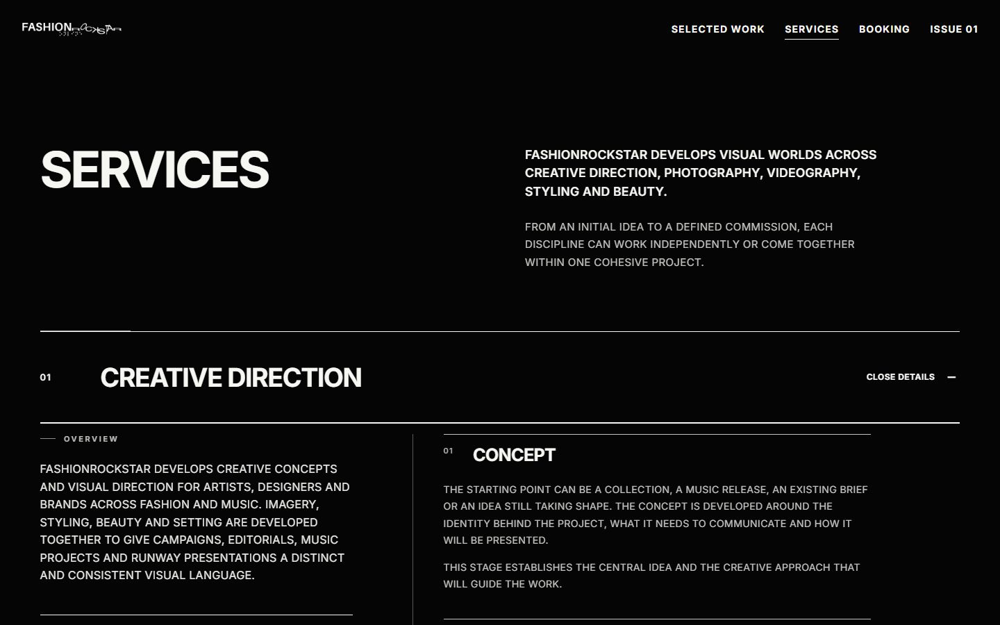
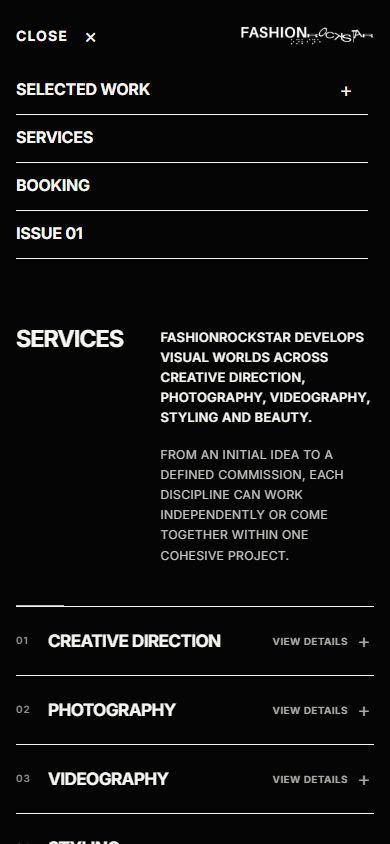
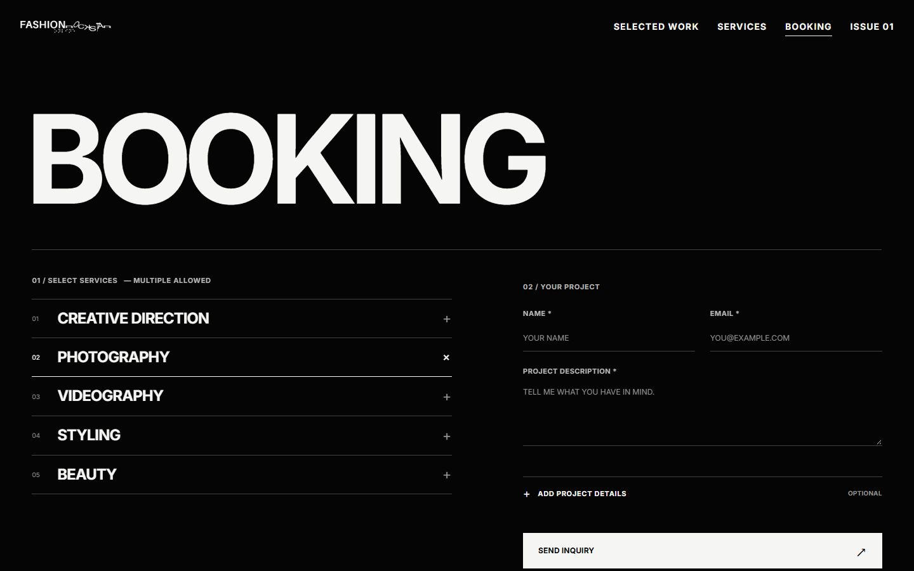
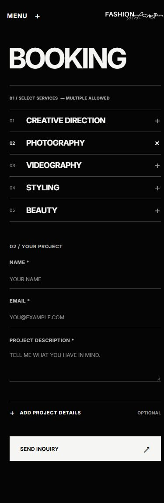
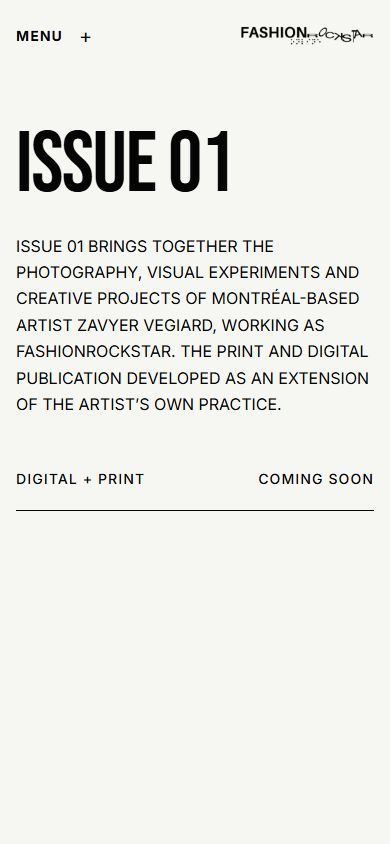

DEVELOPMENT REVIEW · OCTOBER 9, 2026 · PRODUCTION UNCHANGED
FASHIONROCKSTAR
WEBSITE CORRECTIONS
ABOUT is removed from active navigation and redirects to Home. The development branch receives the existing Home, Services, Booking and project-transition runtime. All sixteen projects, their copy and original media remain preserved.
Local Booking submissions are simulated. No live inquiry was sent. This branch is for development review; no production merge or publication occurred.
WORK — DESKTOP
Sixteen original projects remain in their existing order. ABOUT is absent from navigation.

SERVICES — DESKTOP
Five disciplines and twenty stages; current disclosure presentation restored.

MOBILE MENU
Compact transparent navigation with four primary destinations.

SERVICES — 200% TEXT
320px layout verified with enlarged text and all five disclosures.
BOOKING — DESKTOP
Service selection, project fields, optional details and send control.

BOOKING — MOBILE
Responsive form. Success and failure were tested only against the local simulator.

ISSUE 01 — MOBILE
Artist-led publication description; coming-soon status retained.
